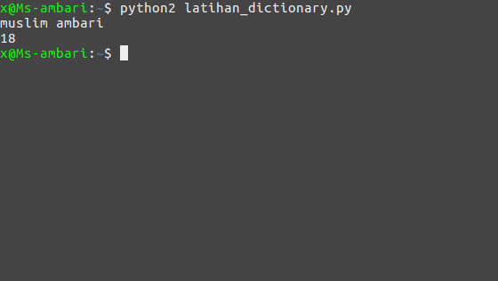
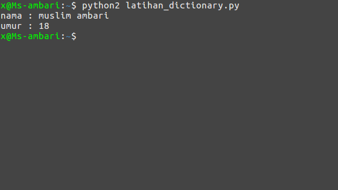
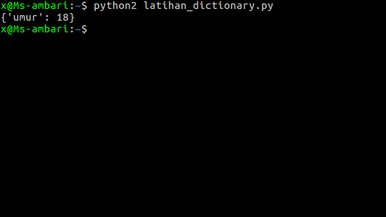
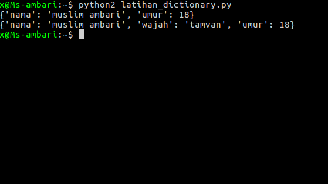
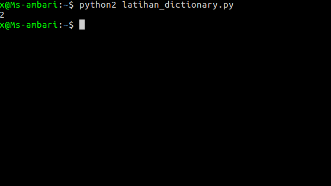

python dictionary
kali ini kita akan belajar dictionary pada python. apa itu dictionary? dictionary adalah sekumpulan data yang dibungkus dengan kurung kurawal {}
dictionary sama seperti list, hanya saja dictionary mempunyai kata kunci kemudian ada nilai, kata kunci harus unik sedangkan nilainya boleh di isi dengan apa saja Contoh:
data_saya = {
"nama":"muslim ambari",
"umur":18
}
Cara membuat dictionary
untuk membuat dictionary wajib menggunakan kata kunci yang disebut key sedangkan isinya disebut value membuat dictionary sama seperti membuat variabel
nama_variabel = {
"key1":"value 1",
"key2":"value 2"
}
mengakses nilai item dictionary
kita sudah paham membuat dictionary, sekarang bagaimana cara mengaksesnya? cara mengaksesnya sama seperti list, namun kunci yang digunakan bukan angka, melainkan keyword (key) yang sudah kita tentukan. biar lebih paham mari kita praktekan... buat file baru bernama latihan_dictionary.pydan ikuti kode berikut
# membuat dictionary
data_saya = {
"nama":"muslim ambari",
"umur":18
}
# mengakses nilai
print data_saya["nama"]
print data_saya["umur"]
Hasilnya

bagaimana kalau datanya ada 100, apakah kita akan menggunakan fungsi print sebanyak 100 kali ?
tinggal menggunakan perulangan for, nanti kita pelajari tentang perulangan(loop) di tutorial
selanjutnya, untuk kali ini, abaikan saja dulu,menampilkan nilai dictionary dengan perulangan for
data_saya = {
"nama":"muslim ambari",
"umur":18
}
for key,value in data_saya.items():
print "{} : {}".format(key,value)
Hasilnya:

Menghapus item dictionary
untuk menghapus nilai item di dictionary sama seperti menghapus data list yaitu menggunakan fungsi del
Contoh:
data_saya = {
"nama":"muslim ambari",
"umur":18
}
del data_saya["nama"]
print data_saya
Hasilnya:

key nama dengan isi valuenya muslim ambari sudah tidak ada,kenapa? karena sudah dihapus menggunakan fungsi del tadi.
menambahkan item ke dictionary
untuk menambahkan item ke dictionary. kita bisa gunakan fungsi update()
Contoh:
data = {
"nama":"muslim ambari",
"umur":18
}
# menampilkan dictionary sebelum ditambahkan
print data
# menambahkan item ke dictionary
data.update({"wajah":"tamvan"})
# menampilkan dictionary sesudah di tambahkan
print data
Hasilnya:

lalu jika ingin mengetahui ada berapa jumlah data yg ada di dictionary?gampang, tinggal gunakan fungsi lenContoh:
data = {
"nama":"muslim ambari",
"umur":18
}
print len(data)
Hasilnya:

oke, sekian pembelajaran tentang dictionary, semoga udah paham dan silahkan pelajari tuorial selanjutnya
Lanjut